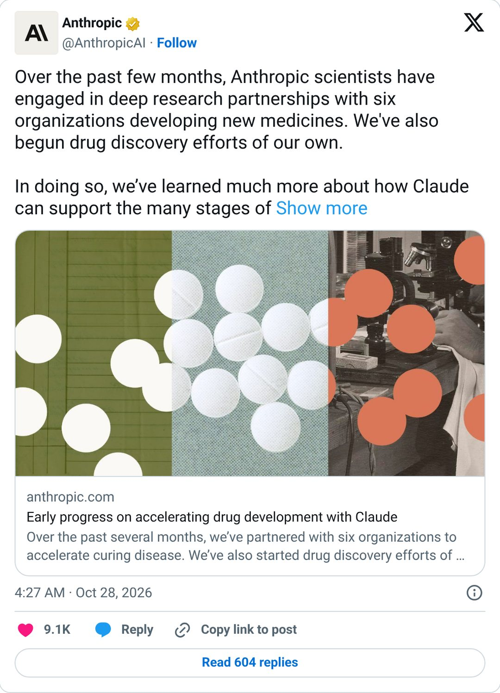
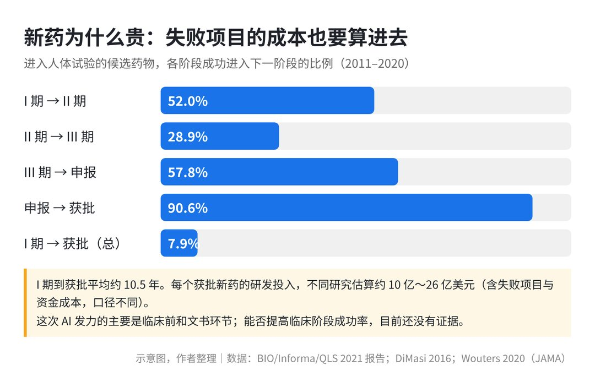
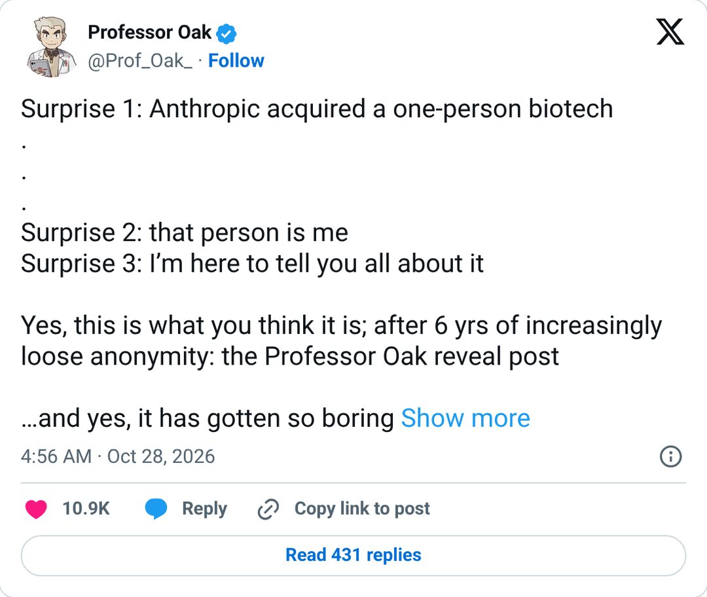
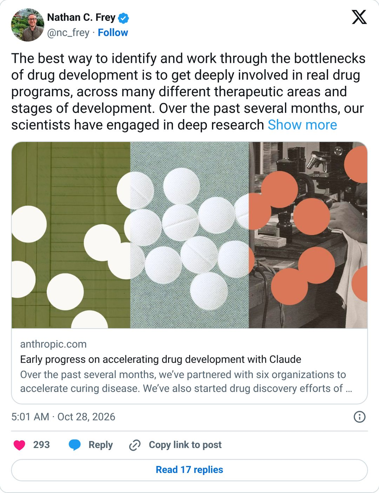
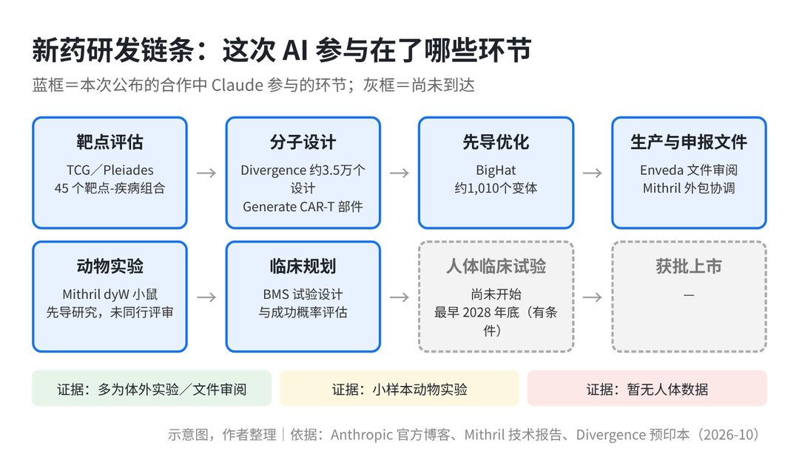
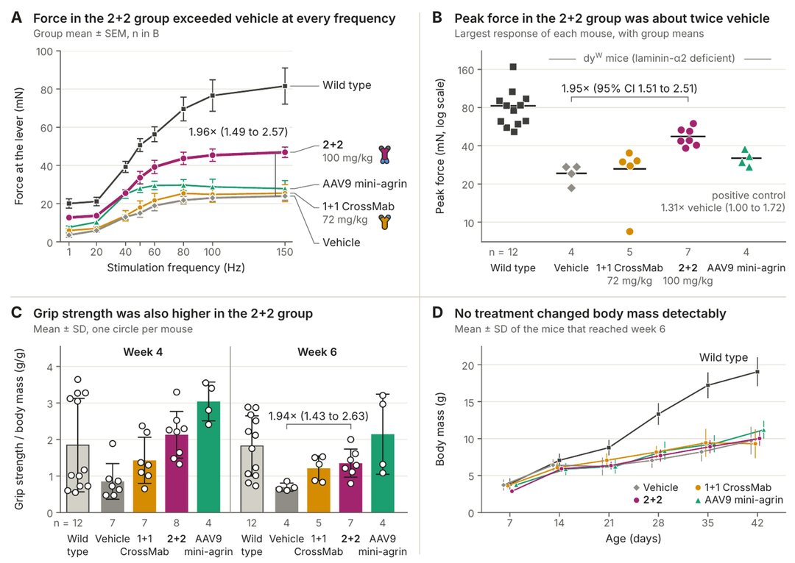

只有 1 名全职员工，依靠 8 位付费顾问，协调 11 家外部实验室。
在不到 18 个月的时间里，这家名为 Mithril Medicine 的微型生物科技公司，把一款针对严重儿童罕见病的候选双抗疗法推进到了小鼠体内实验阶段。
2026 年 10 月 27 日，大模型公司 Anthropic 宣布了这一系列早期进展，并披露已收购 Mithril。

这起收购和技术发布在科技界与医药界引起了广泛关注。
不少人好奇，通用大模型公司直接下场做药，这个行业的操作方式会不会跟着改变。
我想把故事和数据分开看：Anthropic 这次到底做成了什么，边界又在哪里。
一、问题：新药研发为什么又慢又贵，以及这次发布的核心追问
1. 行业老问题：10 年以上、约 10 亿～26 亿美元（估算）、7.9% 的成功率
在传统生物医药领域，新药研发长期受困于漫长的时间周期与高额的资金投入。
在美国，从最初发现疾病靶点到最终新药获批，全流程平均需要 10 到 15 年。
即便候选药物已经进入 I 期临床试验，到获批平均还要约 10.5 年。

关于一款新药的研发成本，业界有多项学术测算，因统计口径不同而有所差异。
塔夫茨大学的 DiMasi 等学者在 2016 年的研究中测算，每个获批新药的税前资本化研发成本约为 25.58 亿美元（以 2013 年美元计，包含研发期间所有失败项目的沉没成本与资金时间折现），实际净现金支出约为 13.95 亿美元。
Wouters 等学者 2020 年发表在《美国医学会杂志》（JAMA）上的研究，基于 63 个获批药物测算出资本化投入的中位数为 9.85 亿美元（以 2018 年美元计），其中肿瘤与免疫类药物的中位数高达 27.7 亿美元。
我认为，这些常被引用的成本数据，主要是行业用极少数成功产品去分摊大量失败管线带来的结果。
临床转化率偏低是推高成本的关键根源。根据 BIO 等机构统计的 2011 到 2020 年行业数据，从 I 期临床最终推进至获批上市的总体成功率只有 7.9%。
II 期临床试验（首次在患者身上初步看疗效、摸索剂量的阶段）是最大的瓶颈，通过率仅为 28.9%。
我的看法是：新药研发真正贵的地方，在于生物系统太复杂、人体试错成本太高；实验室里算得快，只解决了其中一小块。
2. 反差：一人公司与 11 家外部实验室
在这样高门槛的行业背景下，Anthropic 公布的案例形成了鲜明的反差。
被收购的 Mithril 只有创始人 Cody Tranbarger 一名全职人员，早期由风投机构 Atlas Venture 孵化，另有 8 位付费顾问。
Mithril 的实验交给 11 家外部实验室（合同研究组织，即 CRO，专门接受药企委托执行化学合成、动物试验等外包工作的第三方实验机构）执行。
Cody Tranbarger 借助大语言模型 Claude 编排整个外部研发网络，在不到 18 个月内完成了针对 LAMA2 相关先天性肌营养不良的双抗候选分子设计与小鼠体内给药测试。

据媒体 R&D World 报道，Anthropic 对 Mithril 的收购发生在 2026 年 7 月（待确认），具体交易金额双方均未披露。
“一个操盘手 + AI 调度 + 外部实验室”的组合，很容易被讲成“超级个体做新药”的故事。
但我认为，这种反差感很强的叙事容易让人产生误解，必须仔细审视它所处的特定边界条件。
3. 这次发布的核心追问：AI 到底在改变什么环节？
Anthropic 在官方说明中明确指出：药物研发不存在单一瓶颈，瓶颈分散在寻找靶点、设计分子、生产制造、监管申报和临床试验的整个流程中。
Anthropic 药物发现与开发研究负责人 Nathan C. Frey 也表示，解决这些瓶颈较好的方式是直接参与真实的药物项目。
官方也提醒，这些成果大多仍处于临床前阶段。对 Mithril 的候选药物，官方说法是：如果后续测试继续站得住，最快 2028 年底可以开始人体试验。
这引出了大家关心的核心问题：AI 到底是在生物学层面提升了分子设计的命中率，还是通过大模型的工程能力梳理了繁琐的研发流程？
二、分析：六项合作与 Mithril、证据强度、竞争格局
1. 官方公布的六项合作：AI 到底做了什么？
Anthropic 官方展示了模型与六家机构及 Mithril 的合作，涉及了药物研发的多项上游环节。

在 Mithril 自身项目中，团队针对严重的儿童罕见病 LAMA2 相关先天性肌营养不良（LAMA2-CMD），设计了双特异性桥接抗体。
在实际执行中，Claude 协助管理了 11 家 CRO；在 1 周内审阅了包含 113 个抗体构建的 341 页生产数据包。
模型在 2 分 40 秒内给出初步结论，7 分 53 秒完成全部构建的可视化汇总，中位回复时间为 96 秒（相比之下 CRO 的首次中位回复时间为 8.5 小时）。
它为团队起草了 17 封沟通邮件（人类编辑后发出 12 封），并自动标出 41 个需人工核实确认的无依据点；当人类推翻其全面测动力学的建议后，模型在 4 分钟内重构出 89 个方案的修正计划。
在食物过敏领域，Divergence Labs 针对 IgE（人体内介导急性过敏反应的关键免疫球蛋白）靶点，借助 Claude 在约 1 个月内基本自主生成了约 3.5 万个抗体设计。

在细胞疗法领域，Generate Biomedicines 的 6 位科学家使用 Claude Code 重构了 CAR-T 细胞（经基因工程改造能精准识别并杀伤肿瘤细胞的人体 T 淋巴细胞）的胞内结构域。
效果最好的设计比标准部件短约 70%；在实验室测试中，细胞表面的受体数量约为原来的 10 倍，杀伤肿瘤细胞更有效，免疫细胞保持活跃的时间也更长。
在先导分子优化环节，BigHat Biosciences 将模型接入实验数据系统，在 10 周内测试了约 1,010 个变体。
研究人员和模型一起重新分析原始数据，发现常用指标可能有误导，提出了新指标，主要预测得到验证。表现最好的版本结合力强 10 倍以上；癌症先导分子在高 18°C 的温度下仍能保持溶解；长效先导分子的结块速度慢了 100 倍以上。
在文书审阅与申报领域，Enveda 面临着化学家最多 75% 的时间花在文书上的痛点。
在处理一份 1,061 页的 CMC（化学、制造与控制，即新药申报中证明药品质量一致性、工艺可控性与生产合规性的核心技术文档）文件时，Claude 找出了人工发现的全部 11 个问题，并另外标出了人工遗漏的 7 个问题，使审阅时间减少了 89%（从 25 小时以上压缩至 3 小时以下）。
在两份监管文件的起草测试中，一份耗时 4 小时完成（人工通常约需 3 个月），另一份在人工复核中仅发现一处细微错误。
在靶点发现环节，投资机构 The Column Group（TCG）孵化了新公司 Pleiades，用第一个 Claude skill（靶点评估）评估了 45 个靶点-疾病组合。
在临床试验设计环节，百时美施贵宝（BMS）高级副总裁 Michael Pourdehnad 表示，借助模型进行试验方案规划与成功概率评估，单次提示词即可生成以往需要团队耗时数天才能完成的初步分析架构。

梳理下来，我认为 AI 在这七个场景中的作用应当按任务属性来区分。
在 Enveda 的 CMC 文书审阅、Mithril 的外包协同及 BMS 的方案起草中，大模型发挥的是它擅长的长文本理解、信息提取与多源调度能力。
在 Generate 和 BigHat 的项目里，AI 偏向充当科学家的设计与数据分析助手：前者用 Claude Code 重新设计蛋白部件，后者把 Claude 接入了实验数据系统。
2. 证据强度复盘：体外、小鼠还是人体？
面对这些数字，我会把不同环节的证据强度分开看。
在体外结合与功能水平上：
Divergence 提到的 3.5 万个设计，不能等同于 3.5 万个潜在药物。
在制药流程中，计算生成的虚拟分子属于初期筛选候选；在体外实验中，团队最终只合成并测试了 91 个破坏臂和 57 个锚定臂。
实验确认，91 个破坏臂中有 20 个能结合并拆下 IgE（其中 3 个比临床标准药奥马珠单抗更快），57 个锚定臂中仅有 3 个具备结合力（KD 为 3.4 至 235 nM）。
同时要注意，目前这两只“手”尚未拼接组装成完整的双特异性抗体，也没有进行非人灵长类交叉反应测试及体内药效验证。
在动物体内实验水平上：
Mithril 公布的技术报告明确标注为未经同行评审（Not peer reviewed）。

在这项针对 dyW 肌营养不良小鼠模型的先导研究中，每组仅有 4 到 7 只小鼠。
实验数据显示，2+2 构型双抗组的小鼠前肢峰值肌力约为溶剂对照组的 1.95 倍（95% 置信区间 1.51–2.51），握力约为 1.94 倍；而另一种 1+1 构型在测试中没有测到效果；各实验组小鼠的体重均无明显变化。
该报告也写明了实验存在的局限：小鼠按顺序入组而非随机化入组，同窝小鼠接受同种处理。
如果按单只小鼠为单位计算，P 值很小（P=0.0001），但按“窝”为统计单位，P 值为 0.057（7 窝能得到的最小值），没有达到学术上常用的 0.05 统计学显著性门槛。
报告作者说明，这一结论仍需要后续进行严格的同期、盲法重复实验来验证。
在人体临床阶段上：
官方原话提到这些研究“大多仍是临床前”。目前展示的分子结果，都还停留在体外或小鼠阶段。
Mithril 预计最早 2028 年底进入人体试验，并且前提是“候选分子在后续测试中继续站得住”；据 R&D World 报道，其针对另一种肌营养不良的第二个项目最早要到 2029 年才可能进入试验阶段（待确认）。
我认为，从体外分子的结合活性到人体内的吸收、分布、代谢、排泄与毒性（ADMET），过程充满不确定性。
动物模型的信号属于早期探索结果，不能把它当成已经成型的药物。
3. 竞争格局：模型公司、AI 药企与大药厂
当前全球 AI 制药赛道呈现出不同阵营的竞争态势。
底层的模型厂商方面：
OpenAI 在 2026 年 4 月与跨国药企诺和诺德达成战略合作，并推出生命科学模型 GPT-Rosalind，客户包括安进、莫德纳等。
就在 Anthropic 发布成果前一周的 2026 年 10 月 20 日，OpenAI 宣布收购了 Orchestra Bio，这是一个让人与 AI 智能体协同推进药物项目、追踪研究和时间线的平台。
一周后，Anthropic 公布已收购 Mithril（据报道收购发生在 7 月，待确认）并开始参与做药。我的判断是，两家模型公司都在往“药物项目编排”这个方向走。
原生与垂直 AI 药企阵营方面：
港股上市的英矽智能（Insilico Medicine）走在临床前沿，由 AI 发现靶点、生成式 AI 设计分子的 TNIK 抑制剂 rentosertib，针对特发性肺纤维化的 III 期临床试验已于 2026 年 9 月 10 日完成首例患者给药，试验在中国 47 个临床中心开展，计划入组约 320 人、随访 52 周，目前该药仍处于在研状态，尚未正式获批。
由 DeepMind 衍生出的 Isomorphic Labs，在 2025 年完成 6 亿美元首轮外部融资后，于 2026 年 5 月再次完成由 Thrive Capital 领投的 21 亿美元 B 轮融资。
据路透社报道，其进入临床的时间表已从最初宣称的 2025 年底推迟至 2026 年底前；据 STAT/Boston Globe 2026 年 10 月的报道，其项目仍处于临床前阶段。
另一家 AI 制药公司 Recursion 在 2024 年合并 Exscientia 之后，砍掉了 REC-2282、REC-994、REC-3964 等项目（见其 2025 年一季度财报），对管线进行了收缩和聚焦。
算力厂商与传统大药厂的联合方面：
2026 年 1 月，礼来与英伟达宣布共建 AI 联合实验室，5 年内最多投入 10 亿美元；礼来还通过 TuneLab 向生物科技伙伴提供药物发现模型。
从这个格局可以看出，模型厂商在尝试切入药物研发的数字化工作流，而垂直 AI 药企则直面临床后期的实际检验。
我的判断是：用 AI 做药的公司，同样要面对管线取舍和临床失败的风险，Recursion 砍项目就是一个例子。
三、方案：AI 制药目前可落地的模式，以及“一人+AI+外包网络”的适用边界
1. 现实可落地的三大应用模式
结合上述行业案例，我认为大语言模型在新药研发中展现出三类可行的落地模式。

一是“流程编排与任务并行化”。
药企同时和多家外部 CRO 打交道，大量时间耗在来回沟通和等待上。Mithril 的数据里，CRO 首次回复的中位时间是 8.5 小时。
大模型作为调度工具，能在几分钟内提取数据、起草邮件、标出待决事项，帮助原本串行的研发流程更高效地并行运转。
二是“专业文书处理与监管申报协同”。
新药研发有大量的专业文书，包括实验记录、质量标准和监管申报资料。
Enveda 的实践证明，大模型在处理长文本、核对跨文档数据、排查申报疏漏上能够提高效率，减少科学家花费在案头文书上的时间。
三是“算法与实验结合下的分子定向设计与筛选”。
在 BigHat 和 Generate 的案例中，AI 的设计与实验数据保持同步，BigHat 还把 Claude 直接接入了实验数据系统。
模型协助重新分析实验数据、提出新指标，帮助科学家在结合力、耐热溶解性、结块速度等参数上进行优化。
Cody Tranbarger 在文章中提到，比起“压缩时间线”，他认为编排与并行化是眼下相对容易实现的目标。
我认同这一务实看法，现阶段大模型产生直接实用价值的落脚点，主要是作为研发环节中的组织工具。
2. “一人 + AI + 外包网络”靠什么跑通，边界在哪
Mithril 展示的“单人推进临床前”做法很有参考价值，但也需要理清它背后的支撑条件。
这种模式能够走通，依赖三个基础条件。
一是操盘手和顾问。操盘手自己要有扎实的生物学判断，能识别模型的错误；背后还有 8 位付费顾问。
二是成熟的外包实验室（CRO）网络。合同、物流和实验交给 11 家外部实验室，Claude 帮忙把这些环节组织起来。
三是所选疾病比较特殊。
LAMA2-CMD 属于单基因遗传缺陷罕见病，致病机理在分子生物学上相对明确：患儿缺少层粘连蛋白 α2（laminin-α2），肌纤维外面的基底膜锚不住肌细胞膜。
患者肌肉会多产生一种替补蛋白 laminin-α4，但它几乎抓不住细胞膜。Mithril 设计的双抗一头抓 laminin-α4，一头抓细胞膜上的 β-dystroglycan，用类似“卡扣”的方式把替补蛋白固定回去。我的判断是，这种“物理锚定”思路机制相对清楚，不涉及复杂的多靶点信号调控。
根据 BIO 的统计报告，罕见病领域药物从 I 期临床到获批的总体成功率约为 17.0%，高于全行业平均的 7.9%。
我认为，这类微型研发团队模式比较适合用于“机理明确、靶点单一、有标准化动物模型”的罕见病早期项目。
如果把这套模式直接套用到实体瘤、阿尔茨海默病或代谢类常见慢病领域，面对复杂的生物机制和庞大的人体试验规模，单纯依赖轻资产编排会遇到很大的困难。
四、风险：从实验室到临床的六类风险
1. 科学证据与数据局限性风险
从科研严谨性来看，Mithril 的小鼠实验数据尚未经过学术同行评审。
实验样本量偏小，而且没有采用随机化分组。
数据按窝统计得出的 P 值为 0.057，在统计学标准上无法排除随机误差影响，需要严格的同期、盲法重复实验来确认。
另外，1+1 构型没有测到效果，说明分子构型很关键；各组小鼠体重没有明显变化。
在学术界和工业界，早期动物模型中表现不错但在后续复现中失败的管线并不少见。
2. AI 幻觉与执行层出错风险
在大模型辅助研发的过程中，执行层面的事实偏差或遗漏是现实的操作风险。
Mithril 的技术报告复盘了与 Claude 协作中出现的 6 处典型错误。
其中至少有 3 处错误随人工编辑后的邮件发给了外部实验室；比如有一处把每管材料量写少了，一天内、在灌装前得到了纠正。
据 R&D World 报道，还有两处针对生产数据的审阅错误，在长达 4 天多的时间里研究人员没有发现。
医药研发对容错率要求很高，试剂浓度、离心参数或质控标准的微小偏差，一旦进入实验，就可能浪费材料与时间，甚至影响整批数据的有效性。
3. 商业模式与估值叙事风险
目前 Anthropic 对 Mithril 的收购金额没有公开，外界对“一人公司值多少钱”的猜测缺乏财务依据。
我的判断是，行业评估 AI 制药的标准正在向临床数据靠拢。
Recursion 在合并 Exscientia 后削减了多个项目，Isomorphic Labs 的临床推进时间表也有所推迟。
我认为，投资者和药企会更关注临床管线的实际推进和数据表现，“AI 能设计多少个分子”这类指标的说服力在下降。
4. 罕见病样本外推风险
罕见病因为病因相对明确、缺乏有效药物，研发逻辑在生物学层面往往相对聚焦。
罕见病药物开发 17.0% 的历史临床成功率，是全行业基准的两倍以上。
如果把 Mithril 在肌营养不良单一项目上的轻资产推进节奏，推演成所有制药领域的常态，容易产生样本偏差。
面对涉及人体多系统、靶点复杂且需要数千人长期随访的常见慢病，微型团队即使借助 AI 编排，也需要面对庞大的临床运营和安全性验证需求。
5. 监管审批与合规风险
目前全球药品监管机构对 AI 在医药研发中的应用持审慎态度。
美国 FDA 于 2025 年 1 月发布的《用 AI 支持药品和生物制品监管决策的考虑》属于征求意见草案，不具备法律约束力。
FDA 与欧洲 EMA 于 2026 年 1 月联合制定的良好 AI 实践原则，同样属于指导性框架。
我的理解是，监管机构审查临床试验申请（IND）等资料时，关注的是扎实的生物学依据、工艺验证和可追溯的原始数据。
大模型推断中的不透明性，不能替代法规要求的质量与药效检验程序。
6. 生物安全与两用风险
随着通用模型在蛋白质构象预测、抗体优化以及胞内受体改造上的能力提升，技术的“两用性”（既可用于研发药物，也有被用于设计危险物质的可能）是行业需要重视的问题（作者判断）。
官方博客提到了 Claude Science、科研额度、生命科学验证计划等支持项目；这次发布中具体的生物安全措施，本文没有核实（待确认）。
我认为，当模型能够批量设计抗体和蛋白时，如何建立有效的防范机制，是模型公司需要面对的合规要求。
五、行动建议：写给四类读者
1. 给普通读者与罕见病患者家属
第一，理性看待技术进展的新闻，不把早期探索当成“现成新药”。
生命科学有其严谨的规律，从动物体内看到肌力改善信号，到经过 I 期、II 期、III 期人体试验并获批，通常需要数年时间。
即便这次进展较快的管线，在后续测试站得住脚的前提下，最快也要到 2028 年底才可能启动人体试验，不要轻信网络上夸大的宣传。
第二，通过正规渠道获取临床研究动态。
建议患者家属关注公开的临床试验登记平台（如 ClinicalTrials.gov、国家药监局药物临床试验登记与信息公示平台），以及正规罕见病公益组织发布的消息，了解合规的试验招募信息。
2. 给医药与生物科技从业者
第一，优先在“流程连接”和“重复耗时”的环节引入 AI 协作。
生物科技公司不用急着投入大笔资金自建底层大模型，可以参考 Enveda 与 Mithril 的做法。
把成熟的大模型用于 CMC 文书核对、申报材料起草、外包机构协同与数据整理中，帮科研人员节省文书处理的时间。
第二，尝试“核心科学家 + AI 编排 + 专业 CRO”的灵活组织方式。
对于机理明确、处于早期发现阶段的管线，团队可以组建精干小组，借助模型处理并行任务，减少前期的人力和管理成本。
第三，建立人工交叉核对机制。
需要注意 Mithril 报告中 3 处模型错误流转到外包实验室的实际情况。
在涉及样品称量、试剂配比、实验步骤下发和质控归档等关键环节，建立双人核对和确认流程，防止模型偏差造成物料浪费。
3. 给 AI 从业者与创业者
第一，从“分子结构生成”向“端到端研发编排系统”延伸。
分子设计只是药物研发的一部分，行业的普遍需求还包括如何把分散的实验数据、不同格式的文档和项目进度组织起来。
开发能够辅助实验方案解析、多节点进度同步的工具，有明确的实际应用价值。
第二，针对科研人机协同场景，做好容错和追溯功能。
除了对话界面，生物医药工具可以加入“标出无依据推测”、数据异常提醒、版本修改记录和结构可视化等工程功能。
第三，关注监管指引，建立数据审计记录。
参考 FDA 与 EMA 的相关指引，在系统设计中保留操作日志和溯源记录，确保系统辅助形成的决策都有原始数据可以核查。
4. 给医疗健康领域投资者
第一，透过“生成分子数量”的表象，细看研发阶段的实际证据。
在评估项目时，要把计算模拟筛选的指标和实际生物活性数据分开看。
重点核实候选分子的体外结合动力学参数（如 KD 值）、体内的成药性（ADMET）、毒理表现，以及实验设计是否包含随机化和规范的统计检验。
第二，合理评估初创药企的“资本效率”。
可以关注善于利用工具优化前期研发开支的团队，但也要考虑到后期临床试验需要的资金支持。
决定新药研发能否落地的关键仍然是人体临床数据的结果，算法工具带来的效率提升，不等于临床试验成功率能直接成倍提高。
在这场由 Anthropic 与多家机构共同推进的尝试中，AI 展现出了连接不同研发环节的能力。
你认为在未来三到五年内，大模型最先带来实质性产业改变的，是生物学底层的“分子设计成功率”，还是商业运营维度的“新药研发团队组织形态”？
欢迎在评论区说说你的判断。如果你身边有做医药或 AI 的朋友，也可以转给他们看看。
参考来源 - Anthropic 官方发布：https://x.com/AnthropicAI/status/2115178675050307942 - Anthropic 官方博客：https://www.anthropic.com/research/early-progress-drug-development - Mithril 技术报告（未同行评审）：https://www-cdn.anthropic.com/52e1f5d50c47ca3818f56704c27cf19e59b62e77.pdf - Divergence 预印本：https://divergencelabs.com/publications/ige-preprint.pdf - Generate 合作研究：https://generatebiomedicines.com/publications/refactored-intracellular-domains-enhance-car-expression-and-function/ - BigHat 合作报告：https://www.bighatbio.com/bighat-anthropic-collaboration-report-10-27-2026 - Enveda 合作成果：https://enveda.com/CMC-Document-Processor/ - Cody Tranbarger 说明：https://x.com/Prof_Oak_/status/2115185849424048564 - Nathan C. Frey 说明：https://x.com/nc_frey/status/2115187081219846566 - R&D World 报道：https://www.rdworldonline.com/anthropic-acquires-mithril-medicine-one-person-biotech/ - The Next Web 报道：https://thenextweb.com/news/anthropic-mithril-acquisition-claude-drug-development - DiMasi 等（2016）研发成本研究：https://pubmed.ncbi.nlm.nih.gov/26928437/ - Wouters 等（2020，JAMA）：https://pmc.ncbi.nlm.nih.gov/articles/PMC7054832/ - BIO 临床开发成功率报告（2021）：https://go.bio.org/rs/490-EHZ-999/images/ClinicalDevelopmentSuccessRates2011_2020.pdf - 英矽智能 III 期首例给药：https://insilico.com/news/isn1009261-insilico-medicine-doses-first-patient-genesis-ipf-3 - Isomorphic Labs 融资公告：https://www.isomorphiclabs.com/press/isomorphic-labs-funding - Reuters：Isomorphic 临床时间表推迟：https://www.reuters.com/business/healthcare-pharmaceuticals/google-backed-ai-drug-discovery-startup-isomorphic-labs-delays-clinical-trial-2026-01-20/ - OpenAI 收购 Orchestra Bio：https://openai.com/index/openai-to-acquire-orchestra-bio/ - Reuters：礼来与英伟达联合实验室：https://www.reuters.com/business/healthcare-pharmaceuticals/nvidia-eli-lilly-spend-1-billion-over-five-years-joint-research-lab-2026-01-12/ - Recursion 2025 年一季度报告：https://www.sec.gov/Archives/edgar/data/1601830/000160183025000074/exhibit991-q0125.htm - FDA AI 监管决策草案指南：https://www.fda.gov/regulatory-information/search-fda-guidance-documents/considerations-use-artificial-intelligence-support-regulatory-decision-making-drug-and-biological - FDA/EMA 良好 AI 实践原则：https://www.fda.gov/media/189581/download